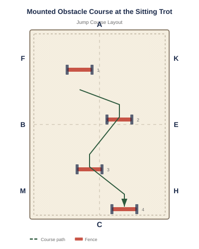

Equipment: 6 ground poles, 4 cones or markers, 1 tarp, 1 bridge or platform
Arena Diagram

Step-by-Step Instructions
Set up a simple course: ground poles to sitting sitting trot over, cones to weave through, a tarp to approach, and a bridge to cross.
Ride the course at the sitting sitting trot. Take each obstacle one at a time.
Let the horse investigate each obstacle before asking it to proceed.
If the horse refuses any obstacle, circle away, approach again, and try from a different angle.
Complete the course once, then ride it again. The second pass should be noticeably more confident.
Rearrange the obstacles for a new pattern. Variety prevents memorization and builds true confidence.
Common Mistakes to Avoid
Rushing through the course without letting the horse process each obstacle.
Skipping obstacles the horse finds difficult instead of working through them.
Making the course too challenging for the horse's current level.
Not praising successful obstacle completions.
Variations & Progressions
Add new obstacles: mailbox, umbrella, barrels, pool noodle curtain.
Trot through familiar obstacles for increased challenge.
Create a timed course for friendly competition.
Tip: An obstacle course is the best way to build a versatile, confident horse. The more obstacles it encounters in training, the less surprises it finds on the trail.